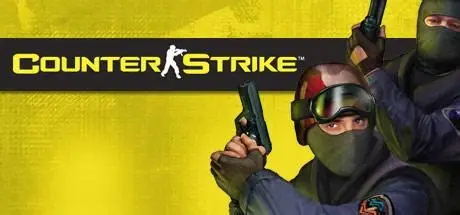
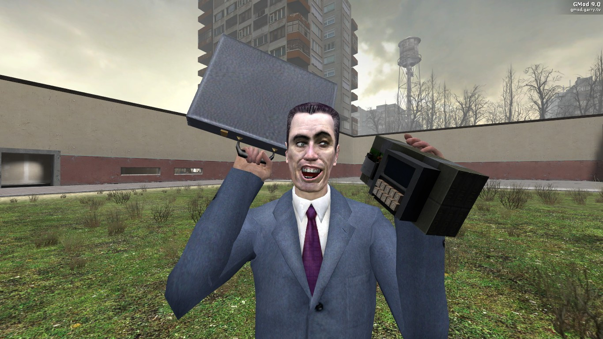

Todos estos enlaces deberían de ser directos y no tener publicidad o acortadores de anuncios, pero en caso de tener alguno, favor de informar a los admins del server de discord

Counter-Strike es una saga de videojuegos de disparos tácticos en primera persona que nació en 1999 como un mod de Half-Life y rápidamente se convirtió en un fenómeno independiente dentro del mundo de los eSports. Su esencia está en el enfrentamiento entre dos equipos: Terroristas y Antiterroristas, cada uno con objetivos específicos como plantar o desactivar bombas, custodiar o rescatar rehenes.

Half-Life es un videojuego de disparos en primera persona con fuerte enfoque narrativo, desarrollado por Valve y lanzado en 1998. Es considerado uno de los títulos más influyentes en la historia del género por su integración innovadora de historia y jugabilidad sin cortes cinemáticos.

Garry’s Mod, conocido también como GMod, es un videojuego sandbox desarrollado por Facepunch Studios y publicado por Valve en 2004. A diferencia de títulos tradicionales, no tiene un objetivo fijo ni una campaña lineal: es un entorno abierto que permite a los jugadores manipular objetos, personajes y físicas del motor Source para crear sus propias experiencias.